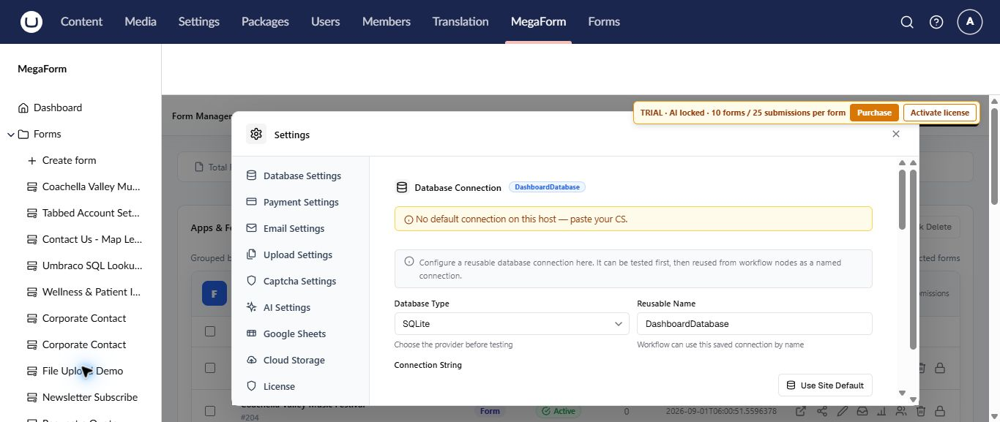

Install and activate MegaForm on Umbraco
MegaForm for Umbraco is distributed as a single NuGet package for Umbraco 17 LTS. After installation, it registers its backoffice section, database schema, property editor, and public form renderer automatically.
Requirements
- Umbraco 17.6.1 or later in the Umbraco 17 LTS line
- .NET 10 or later
- An Umbraco administrator account
- A MegaForm license file for production use
Install the package
Run this command from the Umbraco website project:
dotnet add package MegaForm.Umbraco
Restore and start the site. Sign in to the Umbraco backoffice and confirm that MegaForm appears in the top navigation.
Note
The package registers itself automatically. You do not need to add a composer or manually register MegaForm services.
Activate a production license
Trial status appears at the top of the MegaForm workspace. Purchase opens the configured purchase location; Activate license opens the license pane.
- Select MegaForm → Settings.
- Select License in the settings menu.
- Upload the purchased
license.licfile. - Confirm that the status changes to Active.
The license file is stored privately under App_Data/MegaForm/license.lic. Keep it separate from the NuGet package when moving the site between environments.
Review site-wide settings
The settings workspace groups configuration for database connections, payment providers, email, uploads, CAPTCHA, AI, Google Sheets, cloud storage, and licensing.

Configure only the services your forms use. For example, email settings are required before an email workflow can send a message, and AI settings are required before AI Designer can generate a plan.
Verify the installation
- Open MegaForm → Dashboard.
- Select Create form.
- Confirm that the five-step form wizard opens.
- Create a small test form and publish it.
- Open its public URL and submit one test entry.
See Create a form for the complete flow.